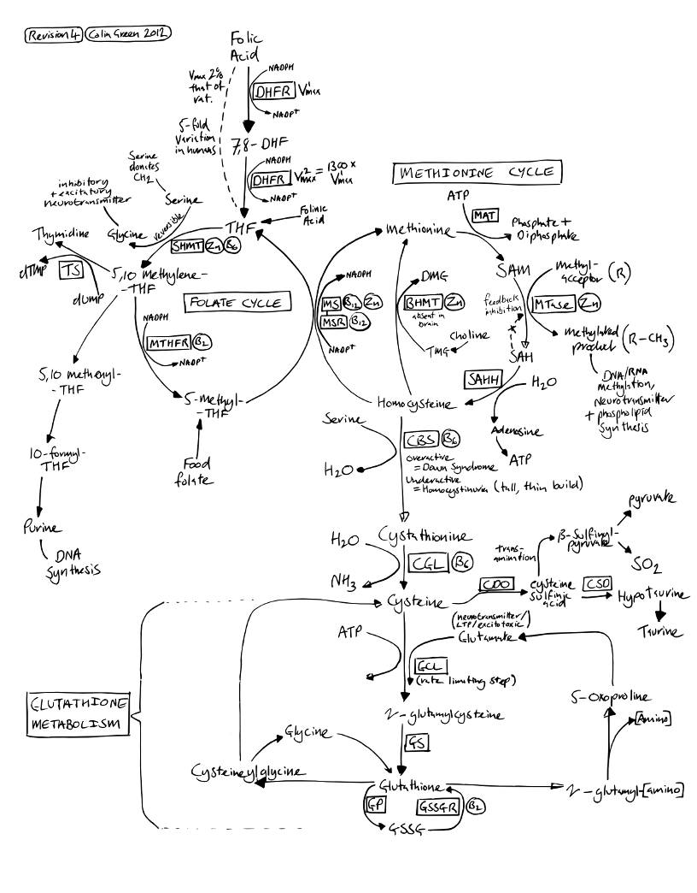

Methionine Cycle

Glossary
Note. PubChem links provide 2D molecule diagrams and interactive 3D models.Enzymes:
- CBS - Cystathione beta-synthase
-
CDO - Cysteine dioxgenase
-
CGL - Cystathione gamma-lyase
-
CSD - Cysteine-sulfinate decarboxylase (a.k.a. Sulfinoalanine decarboxylase)
- DHFR - Dihydrofolate reductase
- GCL - Glutamate-cysteine ligase
-
GPx - Glutathione peroxidase(s)
- GS - Glutathione synthetase
-
GSSGR - Glutathione reductase
-
MAT - Methionine adenosyltransferase
- MS - Methionine synthase
- MSR - Methionine synthase reductase
-
MTase - Methyltransferase(s)
- MTHFR - Methylenetetrahydrofolate reductase
- SAHH - S-Adenosylhomocysteine Hydrolase
- SHMT - Serine hydroxymethyltransferase
- TS - Thimidylate synthase
Substrates / Products:
-
ATP - Adenosine triphosphate (
PubChem)
- DHF - Dihydrofolic acid (PubChem)
- dTMP - Thymidine monophosphate (PubChem)
- dUMP - Deoxyuridine monophosphate (PubChem)
-
GSH - Glutathione (PubChem)
- SAH - S-Adenosyl-L-homocysteine
-
SAM - S-Adenosyl methionine (aka
SAMe, SAM-e, adoMet)
- THF - Tetrahydrofolic acid (PubChem)
- NAD+ / NADH - Nicotinamide adenine dinucleotide
-
HADP+ / NADPH - Nicotinamide adenine dinucleotide phosphate
Co-factors:
-
B2 - Vitamin B2 (Riboflavin).
- B6 - Vitamin B6. Active form is Pyridoxal Phosphate (PubChem)
- B12 - Vitamin B12. Active form is Methylcobalamin
-
Zn - Zinc
Colin,
(some time in 2011)
 Copyright 2011, 2012 Colin
Green.
Copyright 2011, 2012 Colin
Green.This article is licensed under a Creative Commons Attribution 3.0 License